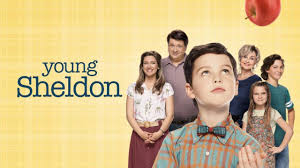

YOUNG SHELDON
DIRECTOR: Chuck Lorre, Craig T Nelson, Jason Alexander, Pamela Adron
PRODUCERr: Timothy Marx
WRITER: Chuck Lorre, Steven Molaro, Maria Ferrari, Nick Bakay, Savage Steve Holland, Eric Kaplan
RELEASED DATE: 25 September 2017
RUNTIME: 1hr
SYNOPSIS: Young Sheldon is an American sitcom television series for CBS created by Chuck Lorre and Steven Molaro. The series is a spin-off prequel to The Big Bang Theory and begins with the character Sheldon Cooper at the age of nine, living with his family in East Texas and going to high school.
CAST: Iain Armitage, Montana Jordan, Raegan Revord, Jim Parsons, Zoe Perry, Lance Barber
SHOWING TIME: Monday-Wednesday: 16h00